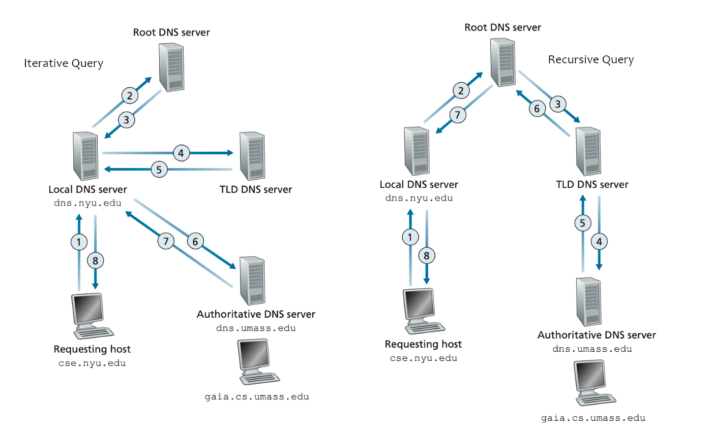

Concepto de DNS |
||||
|---|---|---|---|---|
Cuando se quiere acceder a una página web en Internet se necesita la dirección IP del servidor donde está almacenada, pero, por regla general, el usuario solo conoce el nombre del dominio. La razón no es otra que la dificultad de recordar las series numéricas del tipo 93.184.216.34 que las componen, que son las que, precisamente, constituyen la base de la comunicación en Internet. Es por este motivo por el que las direcciones IP se “traducen” en nombres que podamos recordar, los llamados dominios:
El Sistema de Nombres de Dominio (Domain Name Space) es un sistema de nomenclatura jerárquico que se ocupa de la administración del espacio de nombres de dominio. Su labor primordial consiste en resolver las peticiones de asignación de nombres. Esta función se podría explicar mediante una comparación con un servicio telefónico de información que dispone de datos de contacto actuales y los facilita cuando alguien los solicita. Para ello, el sistema de nombres de dominio recurre a una red global de servidores DNS, que subdividen el espacio de nombres en zonas administradas de forma independiente las unas de las otras. Esto permite la gestión descentralizada de la información de los dominios. Cada vez que un usuario registra un dominio, se crea una entrada WHOIS en el registro correspondiente y esta queda almacenada en el DNS como un “resource record”. La base de datos de un servidor DNS se convierte, así, en la compilación de todos los registros de la zona del espacio de nombres de dominio que gestiona. Por ejemplo, al escribir en el navegador nic.ar, el DNS resuelve esta consulta haciendo una traducción de nombre (dominio) a numero (IP) para así traer el contenido que está alojado en dicha dirección web. |
||||
Breve HistoriaLa creación del sistema de nombres de dominio en 1983 sustituyó al procedimiento anterior de resolución, muy propenso a errores y basado en un archivo local de hosts. Este archivo hosts.txt puede encontrarse aún hoy en sistemas basados en UNIX en el directorio etc/ y, en computadores Windows, en %SystemRoot%\system32\drivers\etc. El archivo hosts.txt requería el mantenimiento manual y una actualización regular, un esfuerzo que, a medida que Internet iba creciendo de forma exponencial, ya no era posible realizar. Hoy, este archivo se usa exclusivamente para la clasificación de direcciones IP en redes locales. También permite bloquear servidores web desviando automáticamente su dirección hacia el alojamiento local (local host) |
||||
Peticiones DNSCuando se introduce la dirección de una página web (URL) en el campo de búsqueda del navegador, este realiza una petición al llamado resolver, un componente especial del sistema operativo cuya función consiste en almacenar en caché direcciones IP ya solicitadas anteriormente, y proporcionarlas cuando la aplicación cliente (navegador, programa de correo) la solicita. Si la dirección IP solicitada no se encuentra en el caché del resolver, este redirige la petición al servidor DNS que corresponda, que, en general, se trata del servidor DNS del proveedor de Internet. Aquí se coteja la petición con la base de datos del DNS y, si está disponible, se envía la dirección IP correspondiente como respuesta (“forward lookup”). Esta permite al navegador del usuario dirigirse al servidor web deseado en Internet. Otra vía alternativa consiste en el camino inverso, es decir, en traducir la dirección IP en la dirección de dominio (“reverse lookup”). Si un servidor DNS no puede responder a una petición con la información de que dispone en su base de datos, puede solicitar la información a otro servidor o reenviar la petición al servidor DNS que corresponda. Esta resolución se puede realizar de dos formas:
|
||||
|  | ||||
|
Fuente: ¿Que es el Servidor DNS? |
||||